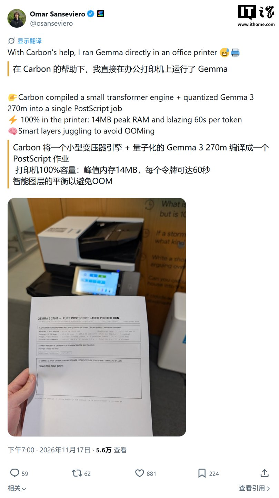

新闻 · 2026-11-20 18:00
约 14MB 内存运行 2.7 亿参数模型：谷歌工程师把 AI 装进打印机，每词元耗时约 60 秒
谷歌工程师奥马尔·圣塞维耶罗在11月17日展示实验，利用仅14.1MB内存的理光激光打印机运行2.7亿参数的Gemma 3 270M模型，每生成一个词元耗时约60秒。实验未修改固件或加装硬件，通过PostScript解释器执行AI推理，采用动态层加载技术，峰值内存占用14.1MB，涉及18个Transformer层。预填充阶段处理“Read the fine”耗时184秒，单词元解码耗时0.1秒，总计184.1秒。

来源与核验
单一信源报道，未交叉核实